Berlin · Spree · Privates Erlebnis
Entdecken Sie Berlin vom Wasser aus
Private Katamaran-Fahrten über die Spree — unvergessliche Momente mit Familie, Freunden oder Ihrem Partner. Stilvoll, sicher und ganz ohne Bootsführerschein.
4 Gäste · Kein Führerschein nötig · ab 59€/Std
Über Ruban Marine
Nicht einfach ein Boot — ein Gefühl.
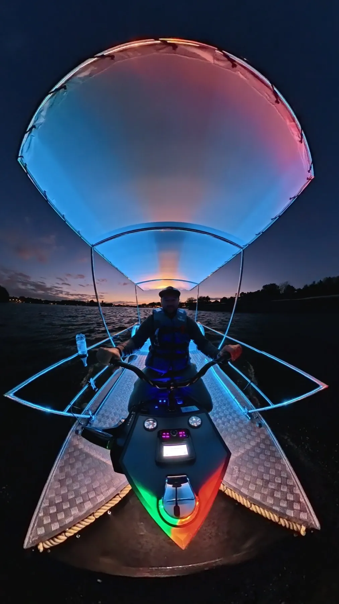
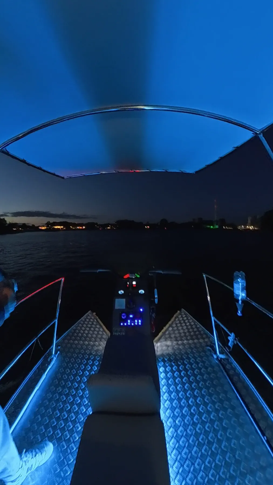
Ruban Marine Berlin steht für Katamaran-Fahrten, die mehr sind als eine Bootstour: Sonnenuntergänge über der Spree, Musik an Bord, Zeit mit den Menschen, die Ihnen wichtig sind. Unser Katamaran ist eine eigene Entwicklung — gebaut für genau diese Momente.
Mehr über den KatamaranWarum Ruban Marine?
Führerscheinfrei
Steuerung wie beim Jetski — sofort verständlich, auch ohne Erfahrung.
Für kleine Gruppen
Bis zu 4 Gäste — ideal für Familien, Paare und Freunde.
Unsere Routen
Die schönsten Ecken Berlins entdecken
Jede Fahrt führt vorbei an Berlins schönsten Wasserwegen — die genaue Route wählen wir gemeinsam, je nach Mietdauer und Ihren Wünschen.
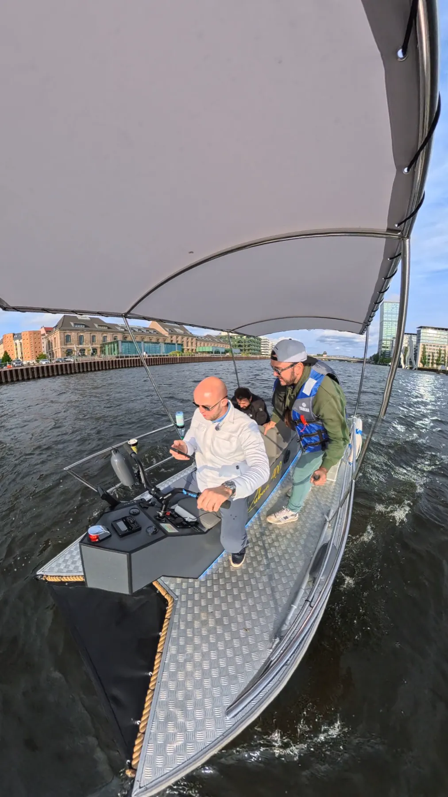
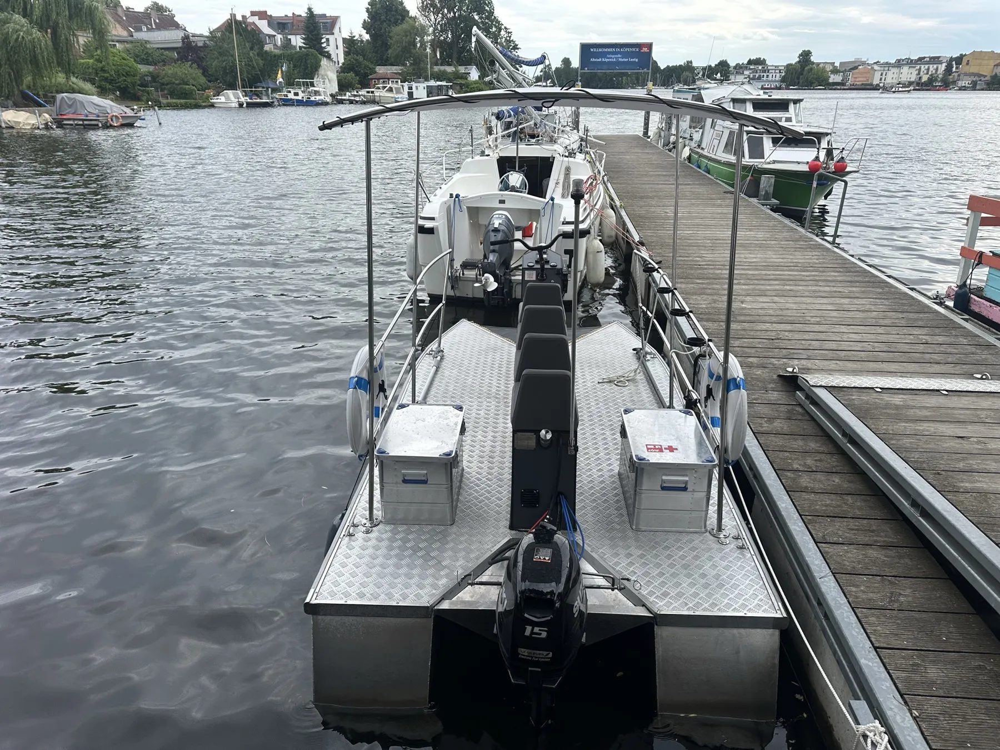
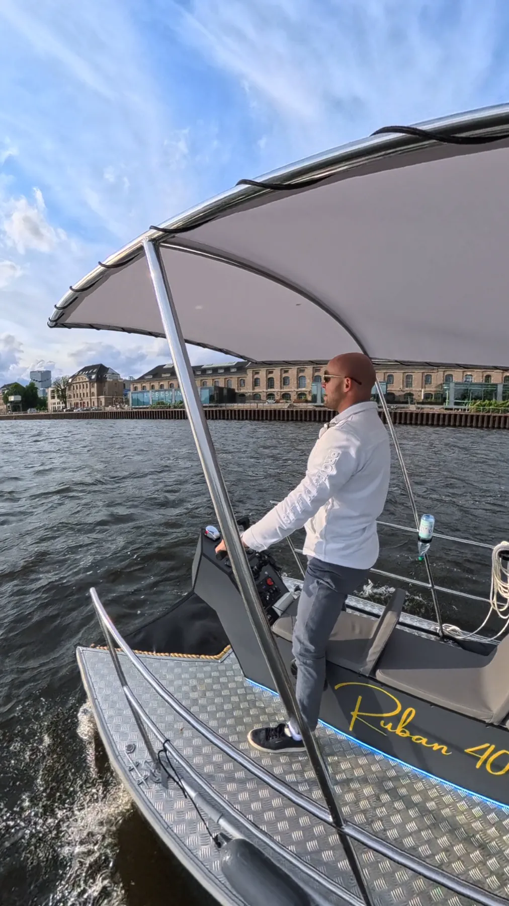
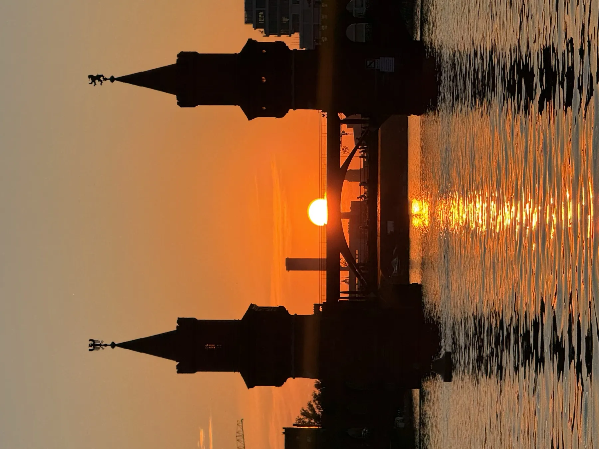
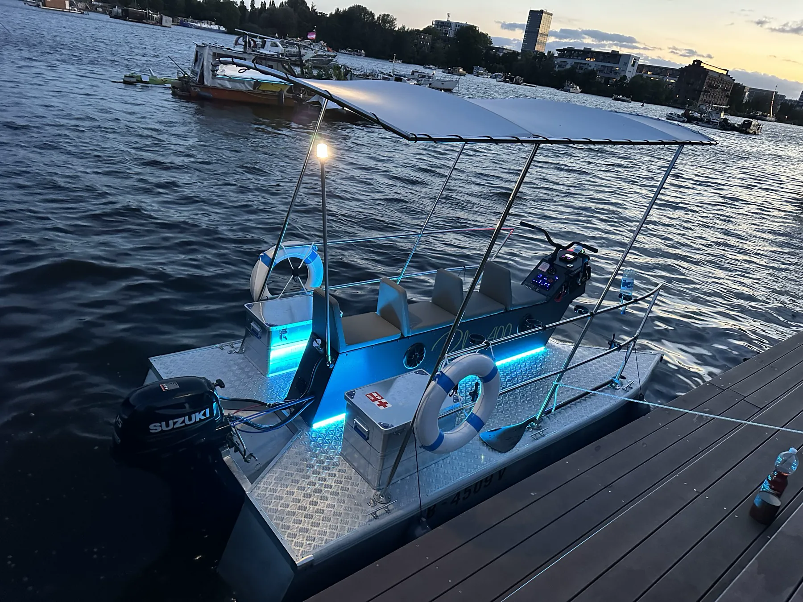
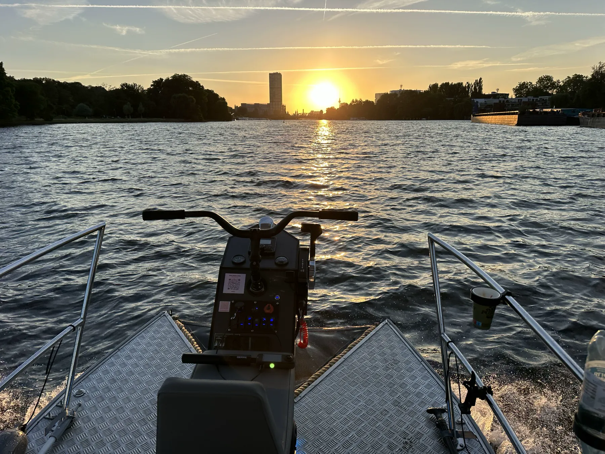
Ausstattung
Alles für entspannte Stunden an Bord.
Eigene Speisen und Getränke sind jederzeit willkommen — für alles andere ist gesorgt.
Großes Sonnendach
Schatten und Schutz für entspannte Stunden auf dem Wasser.
Bequeme Sitze
Gepolsterte Sitze mit Rückenlehne für die ganze Fahrt.
LED- & Abendbeleuchtung
Stimmungsvolles Licht für Dämmerung und Nachtfahrten.
Bluetooth-Musik
Ihre eigene Playlist, verbunden in Sekunden.
USB-Ladeanschluss
Immer erreichbar, auch mitten auf der Spree.
Kühlbox
Kostenlos inklusive, für mitgebrachte Getränke und Snacks.
Getränkehalter
Für jeden Gast an Bord, immer griffbereit.
Beste Sonnenuntergänge Berlins
Die schönste Zeit für eine Fahrt auf dem Wasser.
Einfache Online-Buchung
Datum, Zeit und Dauer wählen — in wenigen Klicks.
Sicherheit
Sicher genießen, sorgenfrei fahren.
Unser Katamaran ist amtlich registriert, verfügt über alle erforderlichen Dokumente und entspricht den deutschen und europäischen Sicherheitsanforderungen. An Bord finden Sie eine vollständige Sicherheitsausstattung.
Geprüfte Sicherheit
Registriert und geprüft nach deutschen und EU-Standards — für jede Fahrt.
Rettungswesten
Für Erwachsene und Kinder immer an Bord.
Erste Hilfe & Brandschutz
Erste-Hilfe-Set und Feuerlöscher an Bord.
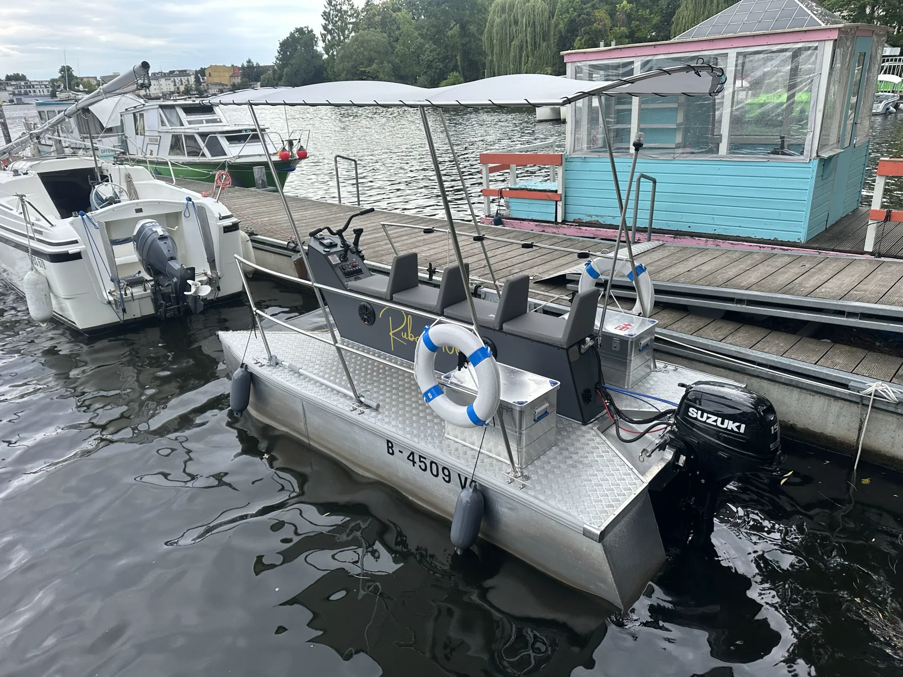
Jederzeit erreichbar
Fragen vor oder während der Fahrt? Wir sind per Telefon und WhatsApp für Sie da.
Preise
Transparente Preise, keine Überraschungen.
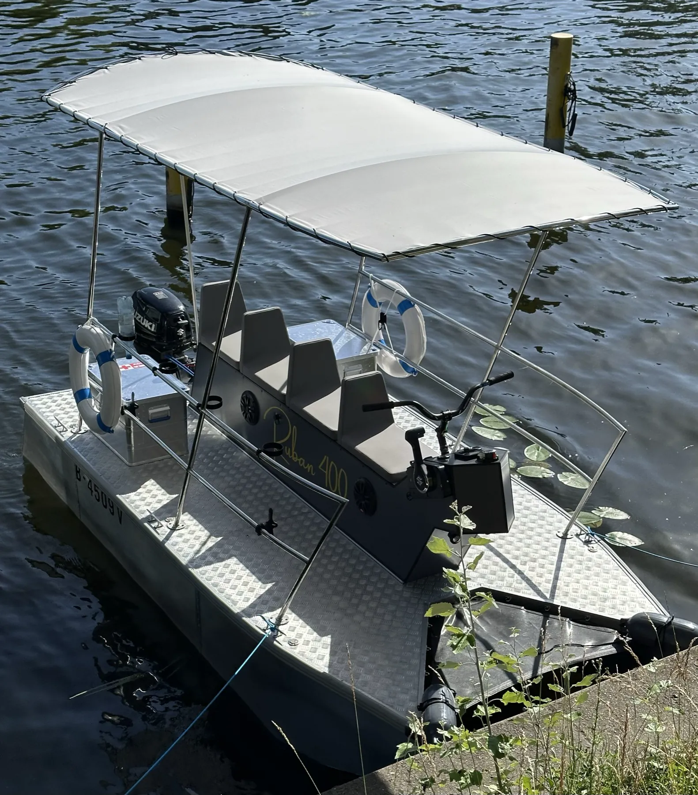
ab 59€/Std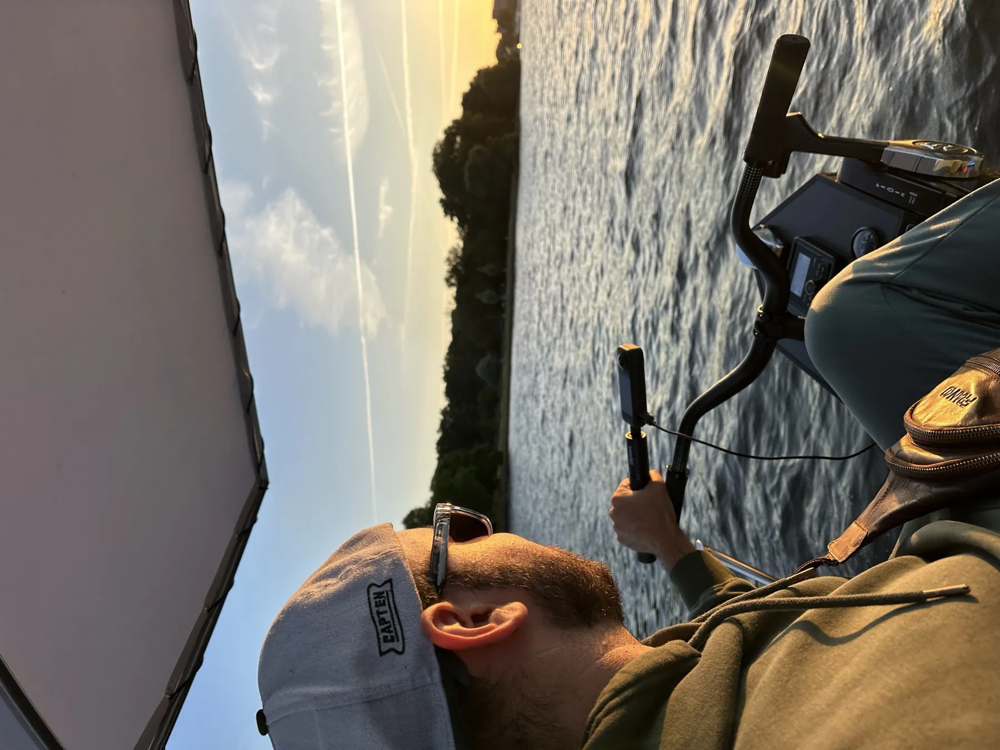
ab 79€/Std BeliebtÖffnungszeiten
Täglich 10:00–24:00 Uhr. Erste Buchung ab 10:00 Uhr, letzte Buchung um 23:00 Uhr.
Stornobedingungen
Stornierung bis 24 Std. vorher: 100% Rückerstattung. Danach oder am Fahrttag: keine Rückerstattung.
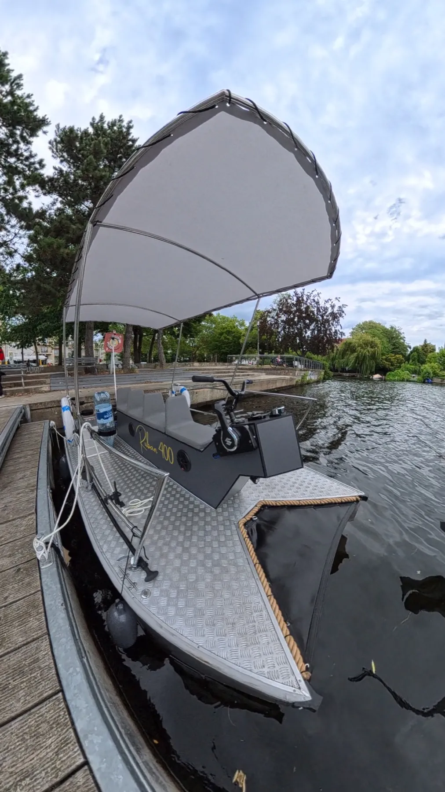
Der Katamaran
Modern. Stabil. Selbst entwickelt.
Unser moderner Aluminium-Motorkatamaran ist eine eigene Entwicklung von Ruban Marine Berlin — entstanden aus der Kombination von Katamaran, Boot, Wasserfahrzeug und Lounge-Plattform. So vereinen wir Stabilität, Sicherheit, Komfort, einfache Bedienung und ein modernes Erscheinungsbild in einem Gefährt.
Dank des geringen Tiefgangs erreicht der Katamaran auch flachere Gewässer, die für klassische Motorboote schwer zugänglich sind.
Bis 4 Erwachsene
Familien, Paare, Freunde
Registriertes Boot
Alle Dokumente vorhanden
Einfache Steuerung
Lenker wie beim Jetski — auch für Anfänger sofort verständlich
Galerie
Tag, Dämmerung, Nacht.
Buchung
Wählen Sie Ihre Zeit auf dem Wasser.
Datum, Uhrzeit und Dauer direkt online auswählen — Sie erhalten sofort eine Bestätigung.
Standort
Unsere Anlegestelle.
Wilhelminenhofstraße 92, 12459 Berlin
Straßenseitige Parkmöglichkeiten in der Nähe. Genaue Hinweise zur Anfahrt erhalten Sie nach Ihrer Buchung.
In Google Maps öffnenKarte laden
Beim Laden wird eine Verbindung zu Google Maps hergestellt und Ihre IP-Adresse an Google übertragen. Mehr dazu in unserer .
Bewertungen
Was unsere Gäste sagen.
Drei Dinge, auf die Sie sich bei jeder Fahrt verlassen können.
Wir wollten kein gewöhnliches Boot bauen — sondern ein Gefühl: Sonnenuntergänge über der Spree, Zeit mit den Menschen, die einem wichtig sind, und die Gewissheit, dass alles an Bord durchdacht ist.
— Ruban Marine Berlin
Direkt an der Spree
Zentrale Anlegestelle in Berlin-Schöneweide.
Familienfreundlich
Rettungswesten für Kinder immer an Bord.
Transparente Preise
Keine versteckten Kosten, klare Stornobedingungen.
Unsere Gäste teilen ihre Erlebnisse auf Google. Lesen Sie aktuelle Bewertungen oder hinterlassen Sie selbst eine — wir freuen uns über jedes Feedback.
Bewertungen auf Google lesenFragen & Antworten
Häufig gestellte Fragen
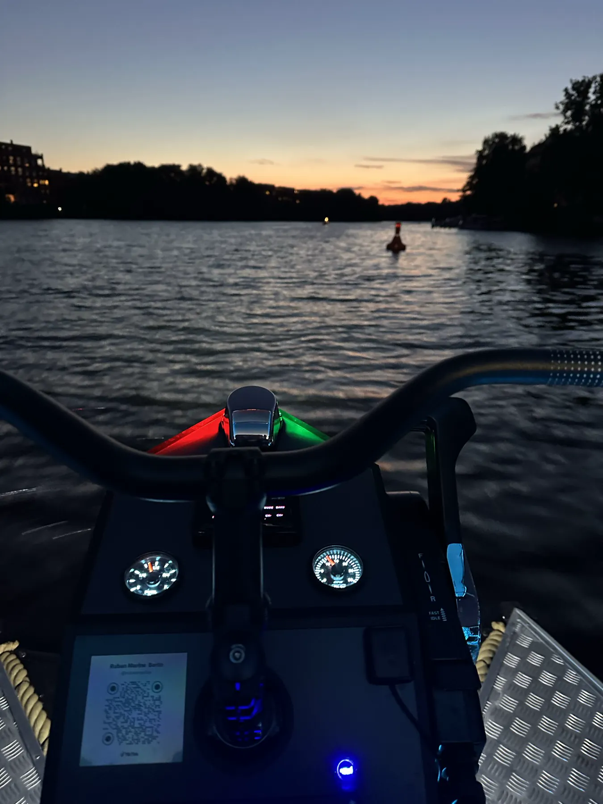
Nein. Für unseren Katamaran ist kein Bootsführerschein erforderlich. Die Steuerung ähnelt einem Fahrrad- bzw. Jetski-Lenker und ist auch für Anfänger sofort verständlich.
Ja, der Katamaran ist familienfreundlich. Rettungswesten in Kindergrößen sind immer an Bord.
Ja. Rettungswesten für Erwachsene und Kinder, ein Rettungsring, ein Erste-Hilfe-Set und ein Feuerlöscher gehören zur Standardausstattung.
Gerne. Eine Kühlbox steht Ihnen kostenlos zur Verfügung.
Ja, sehr gerne. An Bord gibt es einen Getränkehalter für jeden Gast.
Bei Sturm, Gewitter oder behördlicher Sperrung der Wasserstraße bieten wir eine kostenlose Umbuchung oder vollständige Rückerstattung an.
Bei Stornierung bis mindestens 24 Stunden vor Fahrtbeginn erhalten Sie 100% des Betrags zurück. Bei späterer Stornierung oder Nichterscheinen erfolgt keine Rückerstattung.
In der Nähe der Anlegestelle stehen straßenseitige Parkmöglichkeiten zur Verfügung. Genaue Hinweise erhalten Sie nach Ihrer Buchung.
Wilhelminenhofstraße 92, 12459 Berlin — siehe Karte im Bereich „Standort“.
Ihre Frage war nicht dabei?
Unser Team hilft gerne — schreiben Sie uns, wir antworten schnell.
Nachricht
Fragen oder Feedback?
Schreiben Sie uns — wir antworten so schnell wie möglich.
Kontakt
Wir freuen uns auf Sie.
Telefon / WhatsApp
+49 178 4421637
ruban6467@gmail.com
Anlegestelle
Wilhelminenhofstraße 92, 12459 Berlin
Öffnungszeiten
Täglich 10:00–24:00 Uhr